ORGANIC CHEMISTRY – SOME BASIC PRINCIPLES AND TECHNIQUES
Organic chemistry is a subdiscipline within chemistry involving the scientific study of the structure,
properties, and reactions of organic compounds and organic materials, i.e., matter in its various
forms that contain carbon atoms. Study of structure determines their structural formula.
Study of properties includes physical and chemical properties, and evaluation of chemical reactivity
to understand their behavior. The study of organic reactions includes the chemical synthesis of
natural products, drugs, and polymers, and study of individual organic molecules in the laboratory
and via theoretical (in silico) study.
The range of chemicals studied in organic chemistry includes hydrocarbons (compounds containing only
carbon and hydrogen) as well as compounds based on carbon, but also containing other elements,
especially oxygen, nitrogen, sulfur, phosphorus (included in many biochemicals) and the halogens.
Organometallic chemistry is the study of compounds containing carbon–metal bonds.
In addition, contemporary research focuses on organic chemistry involving other organometallics including
the lanthanides, but especially the transition metals zinc, copper, palladium, nickel, cobalt,
titanium and chromium.
Organic compounds form the basis of all earthly life and constitute the majority of known chemicals.
The bonding patterns of carbon, with its valence of four—formal single, double, and triple bonds,
plus structures with delocalized electrons—make the array of organic compounds structurally diverse,
and their range of applications enormous. They form the basis of, or are constituents of,
many commercial products including pharmaceuticals; petrochemicals and agrichemicals, and products
made from them including lubricants, solvents; plastics; fuels and explosives. The study of organic
chemistry overlaps organometallic chemistry and biochemistry, but also with medicinal chemistry,
polymer chemistry, and materials science.
Science of organic chemistry is about two hundred years old. Around the year 1780, chemists began to
distinguish between organic compounds obtained from plants and animals and inorganic compounds prepared
from mineral sources. Berzilius, a Swedish chemist proposed that a ‘vital force’ was responsible for the
formation of organic compounds. However, this notion was rejected in 1828 when F. Wohler synthesised an
organic compound, urea from an inorganic compound, ammonium cyanate.The development of electronic theory of
covalent bonding ushered organic chemistry into its modern shape.

TETRAVALENCE OF CARBON:SHAPES OF ORGANIC COMPOUNDS:
We know that tetravalence of carbon and the formation of covalent bonds by it are explained in terms of
its electronic configuration and the hybridisation of s and p orbitals. It may be recalled that formation
and the shapes of molecules like methane (CH
4), ethene (C
2H
4),
ethyne (C
2H
2) are explained in terms of the use of sp
3, sp
2
and sp hybrid orbitals by carbon atoms in the respective molecules. Hybridisation influences the bond
length and bond enthalpy (strength) in organic compounds. The sp hybrid orbital contains more s character
and hence it is closer to its nucleus and forms shorter and stronger bonds than the sp
3 hybrid
orbital. The sp
2 hybrid orbital is intermediate in s character between sp and sp
3 and,
hence, the length and enthalpy of the bonds it forms, are also intermediate between them.
The change in hybridisation affects the electronegativity of carbon. The greater the s character of the
hybrid orbitals, the greater is the electronegativity. Thus, a carbon atom having an sp hybrid orbital
with 50% s character is more electronegative than that possessing sp
2 or sp
3 hybridised
orbitals. This relative electronegativity is reflected in several physical and chemical properties of the
molecules.
Hybridization:
In chemistry, orbital hybridisation (or hybridization) is the concept of mixing atomic orbitals to form
new hybrid orbitals (with different energies, shapes, etc., than the component atomic orbitals) suitable
for the pairing of electrons to form chemical bonds in valence bond theory. For example, in a carbon
atom which forms four single bonds the valence-shell s orbital combines with three valence-shell p
orbitals to form four equivalent sp3 mixtures in a tetrahedral arrangement around the carbon to bond
to four different atoms. Hybrid orbitals are useful in the explanation of molecular geometry and atomic
bonding properties and are symmetrically disposed in space. Usually hybrid orbitals are formed by
mixing atomic orbitals of comparable energies.
Types of hybridisation:
sp3 hybridisation:
Hybridisation describes the bonding of atoms from an atom's point of view. For a tetrahedrally
coordinated carbon (e.g., methane CH4), the carbon should have 4 orbitals directed towards the
4 hydrogen atoms.Carbon's ground state configuration is 1s2 2s2 2p2 or
more easily read:


The carbon atom can use its two singly occupied p-type orbitals to form two covalent bonds with two
hydrogen atoms,[contradictory] yielding the singlet methylene CH2, the simplest carbene. The carbon atom
can also bond to four hydrogen atoms by an excitation (or promotion) of an electron from the doubly
occupied 2s orbital to the empty 2p orbital, producing four singly occupied orbitals.

The energy released by the formation of two additional bonds more than compensates for the excitation
energy required, energetically favoring the formation of four C-H bonds.
Quantum mechanically, the lowest energy is obtained if the four bonds are equivalent, which requires that they
are formed from equivalent orbitals on the carbon. A set of four equivalent orbitals can be obtained that
are linear combinations of the valence-shell (core orbitals are almost never involved in bonding) s and p
wave functions, which are the four sp3 hybrids.

In CH4, four sp3 hybrid orbitals are overlapped by hydrogen 1s orbitals, yielding
four σ (sigma) bonds (that is, four single covalent bonds) of equal length and strength.
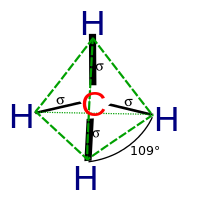

sp2 hybridisation:
Ethene (C2H4) has a double bond between the carbons.
 For this molecule, carbon sp2 hybridises, because one π(pi) bond is
required for the double bond between the carbons and only three σ bonds are
formed per carbon atom. In sp2 hybridisation the 2s orbital is mixed with only
two of the three available 2p orbitals, usually denoted 2px and 2py.
The third 2p orbital (2pz) remains unhybridised.
For this molecule, carbon sp2 hybridises, because one π(pi) bond is
required for the double bond between the carbons and only three σ bonds are
formed per carbon atom. In sp2 hybridisation the 2s orbital is mixed with only
two of the three available 2p orbitals, usually denoted 2px and 2py.
The third 2p orbital (2pz) remains unhybridised.

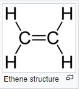
Forming a total of three sp2 orbitals with one remaining p orbital. In ethene,
the two carbon atoms form a σ bond by overlapping one sp2 orbital from each
carbon atom. The π bond between the carbon atoms perpendicular to the molecular
plane is formed by 2p–2p overlap. Each carbon atom forms covalent C–H bonds
with two hydrogens by s–sp2 overlap, all with 120° bond angles.
The hydrogen–carbon bonds are all of equal strength and length,
in agreement with experimental data.
sp hybridisation:
The chemical bonding in compounds such as alkynes with triple bonds is explained
by sp hybridization. In this model, the 2s orbital is mixed with only one of
the three p orbitals,resulting in two sp orbitals and two remaining p orbitals.

 The chemical bonding in acetylene (ethyne) (C2H2) consists of sp–sp overlap
between the two carbon atoms forming a σ bond and two additional π bonds
formed by p–p overlap. Each carbon also bonds to hydrogen in a σ s–sp overlap
at 180° angles.
The chemical bonding in acetylene (ethyne) (C2H2) consists of sp–sp overlap
between the two carbon atoms forming a σ bond and two additional π bonds
formed by p–p overlap. Each carbon also bonds to hydrogen in a σ s–sp overlap
at 180° angles.
STRUCTURAL REPRESENTATIONS OF ORGANIC COMPOUNDS:
Complete, Condensed and Bond-line Structural Formulas:
The structures of organic compounds are represented in several ways. The most important
of these is the Lewis structure. However, if we were to write many compounds with their
Lewis structure then definitely it would be very time consuming. Moreover, the bigger
the size of the compound, the more painful writing its Lewis structure is. To overcome
this problem, some other methods have been introduced.
Complete structural formulae:
The Lewis structures can be simplified by representing the two-electron covalent
bond by a dash. Such a structural formula focuses on the electrons involved in bond
formation.A single dash represents a single bond, a double dash represents a double
bond and a triple dash represents a triple bond. Lone pairs of electrons on
heteroatoms (e.g. oxygen, halogens etc) may or may not be shown.

Condensed structural formulae:
Complete structural formulae can be further abbreviated by omitting some or all the
dashes representing covalent bonds.
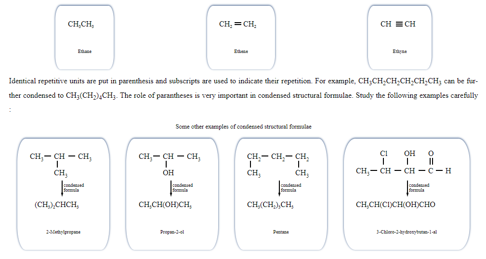
Bond-line structural representation:
In Bond-line structural representation, carbon and hydrogen atoms are not shown and the
lines representing carbon-carbon bonds are drawn in a zig-zag fashion. Only heteroatoms
are written in bond line representation.
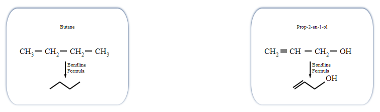
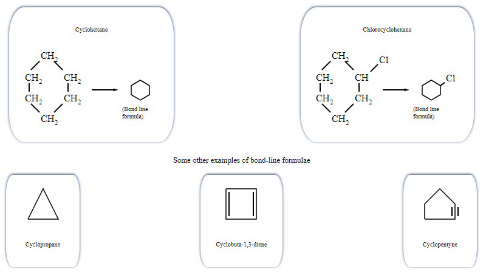
Three-Dimensional Representation of Organic Molecules:
The three-dimensional (3-D) structure of organic molecules can be represented on
paper by using certain conventions. For example, by using solid ( ) and dashed
( ) wedge formula, the 3-D image of a molecule from a two-dimensional picture
can be perceived. In these formulas the solid-wedge is used to indicate a bond
projecting out of the plane of paper, towards the observer. The dashed-wedge is used to
depict the bond projecting out of the plane of the paper and away from the observer. Wedges
are shown in such a way that the broad end of the wedge is towards the observer. The
bonds lying in plane of the paper are depicted by using a normal line (—). 3-D representation
of methane molecule on paper has been shown in the following figure:
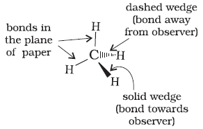
CLASSIFICATION OF ORGANIC COMPOUNDS:Organic Compounds are broadly classified as follows:
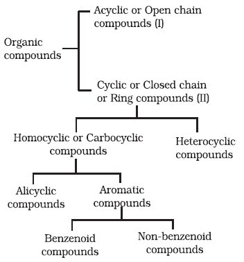
Acyclic compound or open-chain compound
In chemistry, an open-chain compound or acyclic compound is a compound with a linear
structure, rather than a cyclic one.An open-chain compound having no side groups
is called a straight-chain compound .
For those with 4 or more carbons, the linear forms can have
straight-chain or branched-chain isomers. The lowercase prefix n- denotes
the straight-chain isomer; for example, n-butane is straight-chain butane,
whereas i-butane is isobutane.
Straight-chain molecules are often not literally straight, in the sense that their bond
angles are often not 180°, but the name reflects that they are schematically straight.
For example, the straight-chain alkanes are wavy or "puckered",
as the models below show.
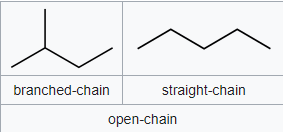
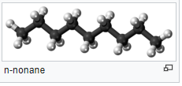
Alicyclic or closed chain or ring compounds:
In organic chemistry, an alicyclic compound contains one or more all-carbon rings which
may be either saturated or unsaturated, but do not have aromatic character.
Sometimes atoms other than carbon are also present in the ring (heterocylic).
Alicyclic compounds may have one or more aliphatic side chains attached.
The simplest alicyclic compounds are the monocyclic cycloalkanes: cyclopropane,
cyclobutane, cyclopentane, cyclohexane, cycloheptane, cyclooctane, and so on.
Bicyclic alkanes include bicycloundecane, decalin, and housane.
Polycyclic alkanes include cubane, basketane, and tetrahedrane.

Aromatic compounds:
Aromatic compounds are special types of compounds.These include benzene and other related ring compounds
(benzenoid). Like alicyclic compounds,aromatic comounds may also have hetero
atom in the ring. Such compounds are called hetrocyclic aromatic compounds.
Benzenoids:Benzenoids are organic compounds with at least one benzene ring in their
structure. The resonance in the benzene rings adds to the stability of the organic
compound and makes them ineffective to changes, until and unless favourable conditions
are met. They have three pi and three sigma bonds arranged alternatively inside the
benzene ring structure. This pattern is also called the conjugated pi system.
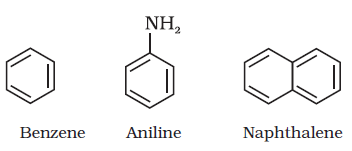
Non-Benzenoids:Non-Benzenoids are organic compounds that do not have a benzene ring.
They are devoid of any kind of benzene rings and have a different structure.
They have a conjugated pi system, irrespective of the absence of the benzene rings.
They contain 5 – 7 carbon atoms in the ring structures. The conjugated pi system imparts
the aromatic nature to these compounds. Some most common examples are azulenes,
Tropolone etc.

Heterocyclic aromatic compounds:A heterocyclic compound is an organic compound in
which one or more of the carbon atoms in the backbone of the molecule has been replaced
by an atom other than carbon. Typical hetero atoms include nitrogen, oxygen, and sulfur.
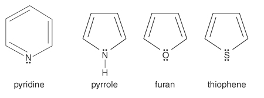
Functional Group:
A functional group is a group of atoms in a molecule with distinctive chemical
properties,that causes the molecule's characteristic chemical reactions.
The same functional group will undergo the same or similar chemical reactions
regardless of the rest of the molecule's composition.
The examples are hydroxyl group (–OH), aldehyde group (–CHO) and carboxylic acid group (–COOH) etc.
Homologous Series:
A group or a series of organic compounds each containing a characteristic functional group
forms a homologous series and the members of the series are called homologues. The
members of a homologous series can be represented by general molecular formula and
the successive members differ from each other in molecular formula by a –CH2 unit. There
are a number of homologous series of organic compounds. Some of these are
alkanes, alkenes, alkynes, haloalkanes,alkanols, alkanals, alkanones, alkanoic acids,
amines etc.
Within that series, many physical properties such as boiling point gradually change with increasing mass.
For example, ethane (C2H6), has a higher boiling point than methane (CH4). This is because the London
dispersion forces between ethane molecules are higher than that between methane molecules, resulting
in stronger forces of intermolecular attraction, raising the boiling point.
IUPAC Nomenclature of Alkanes:
IUPAC nomenclature of organic chemistry is a method of naming organic chemical
compounds as recommended by the International Union of Pure and Applied
Chemistry (IUPAC). It is published in the Nomenclature of Organic Chemistry
(informally called the Blue Book). Ideally, every possible organic compound
should have a name from which an unambiguous structural formula can be created.
According to the Guidelines set by IUPAC, the nomenclature of compounds must follow
these steps:
The Longest Chain Rule: The parent hydrocarbon must be identified and subsequently
named. The parent chain belonging to the compound in question is generally the
longest chain of carbon atoms, be it in the form of a straight chain or a chain of
any other shape.
The Lowest Set of Locants: The carbon atoms belonging to the parent hydrocarbon chain
must be numbered using natural numbers and beginning from the end in which the lowest
number is assigned to the carbon atom which carries the substituents.
Multiple instances of the same substituent: Prefixes which indicate the total number of
the same substituent in the given organic compounds are given, such as di, tri, etc.
Naming of different substituents: In the organic compounds containing multiple substituents,
the corresponding substituents are arranged in alphabetical order of names in the IUPAC
nomenclature of organic compounds in question.The naming of different substituents
present at the same positions: In the scenario wherein two differing substituent
groups are present at the same position of the organic compound, the substituents
are named in ascending alphabetical order.
Naming Complex Substituents: Complex substituents of organic compounds having branched
structures must be named as substituted alkyl groups whereas the carbon which is attached
to the substituent group is numbered as one. These branched and complex substituents must
be written in brackets in the IUPAC nomenclature of the corresponding compounds.
The format of the IUPAC Name of the Compound can be written as:
Locant + Prefix + Root + Locant + Suffix:
1. Root
The Word root indicates the total number of carbon atoms present in the longest carbon chain belonging to
the compound. For example, ‘Meth’ refers to a chain with 1 carbon atom and ‘Pent’ refers to a chain with
5 carbon atoms.
2. Suffix
The suffix in IUPAC nomenclature is usually a functional group belonging to the molecule which follows
the root of the name. It can be further divided into the following types.
A Primary Suffix, which is written immediately after the word root as in the case of alkanes, where the
suffix is ‘ane’.
A Secondary Suffix, which is generally written after the primary suffix is written. For example, compounds
having an alkane and alcohol group attached to them will be named as alkanol, with ‘ol’ being the secondary
suffix for the alcohol group.In accordance with these norms, the suffix of a compound can be written as a
part of the IUPAC name of the given compound.
3. Prefix
Prefixes are added prior to the root of the compounds IUPAC nomenclature. Prefixes are very useful since
they indicate the presence of side chains or substituent groups in the given organic molecule.
These prefixes also offer insight into the cyclic or acyclic natures of the compounds in question.
Primary Prefixes: Indicate the cyclic or acyclic nature of the given compound. The prefix ‘cyclo’ is used
for cyclic compounds, for example.
Secondary Prefixes: Indicate the presence of side chains or substituent groups. An example of these types
of prefixes would be the ‘CH3’ group, which is called the methyl group.
Straight chain hydrocarbons:
The names of such compounds are based on their chain structure, and end with suffix ‘-ane’ and carry
a prefix indicating the number of carbon atoms present in the chain (except from CH4 to
C4H10,where the prefixes are derived from trivial names).

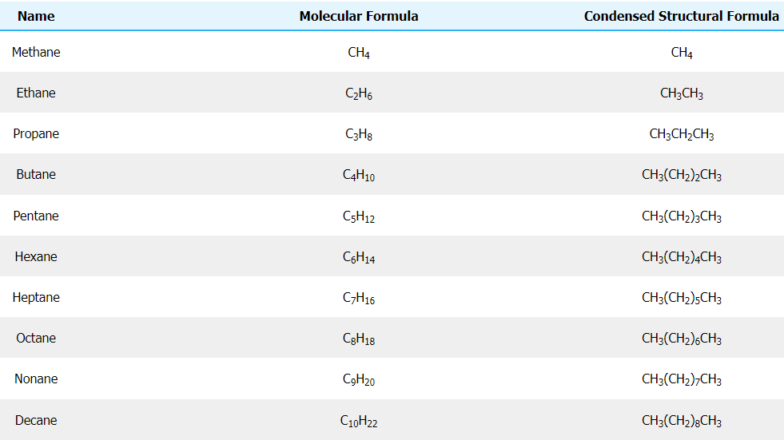
Branched chain hydrocarbons: In a branched chain compound small chains of
carbon atoms are attached at one or more carbon atoms of the parent chain. The small
carbon chains (branches) are called alkyl groups. For example:

In order to name such compounds, the names of alkyl groups are prefixed to the name of
parent alkane. An alkyl group is derived from a saturated hydrocarbon by removing a
hydrogen atom from carbon. Thus, CH4 becomes -CH3 and is called methyl group. An
alkyl group is named by substituting ‘yl’ for ‘ane’ in the corresponding alkane. Some alkyl
groups are listed in the following Table:

Abbreviations are used for some alkyl groups. For example, methyl is abbreviated
as Me, ethyl as Et, propyl as Pr and butyl as Bu. The alkyl groups can be branched also.
Thus, propyl and butyl groups can have branched structures as shown below.

Nomenclature of branched chain alkanes:The rules for naming them are given below :
1. First of all, the longest carbon chain in the molecule is identified.

2.Then the numbering is done in such a way that the branched carbon atoms get the lowest possible numbers.
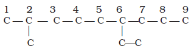
3.The names of alkyl groups attached as a branch are then prefixed to the name of
the parent alkane and position of the substituents is indicated by the
appropriate numbers. If different alkyl groups are present, they are listed in
alphabetical order. Thus, name for the compound shown above is: 6-ethyl-2-
methylnonane. [Note: the numbers are separated from the groups by hyphens and
there is no break between methyl and nonane.]
4.If two or more identical substituent groups are present then the numbers are
separated by commas. The names of identical substituents are not repeated,
instead prefixes such as di (for 2), tri (for 3), tetra (for 4), penta (for 5), hexa (for
6) etc. are used. While writing the name of the substituents in alphabetical order,
these prefixes, however, are not considered.Thus, the following compounds are
named as:
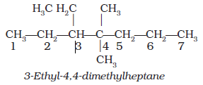
5. If the two substituents are found in equivalent positions, the lower number is
given to the one coming first in the alphabetical listing
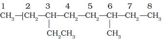
6. The branched alkyl groups can be named by following the above mentioned
procedures. However, the carbon atom of the branch that attaches to the root
alkane is numbered 1 as exemplified below:
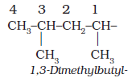
The name of such branched chain alkyl group is placed in parenthesis while naming the
compound. While writing the trivial names of substituents’ in alphabetical order, the
prefixes iso- and neo- are considered to be the part of the fundamental name of alkyl
group. The prefixes sec- and tert- are not considered to be the part of the fundamental
name. The use of iso and related common prefixes for naming alkyl groups is also
allowed by the IUPAC nomenclature as long as these are not further substituted. In multisubstituted
compounds, the following rules may aso be remembered:
• If there happens to be two chains of equal size, then that chain is to be selected
which contains more number of side chains.
• After selection of the chain, numbering is to be done from the end closer to the
substituent.

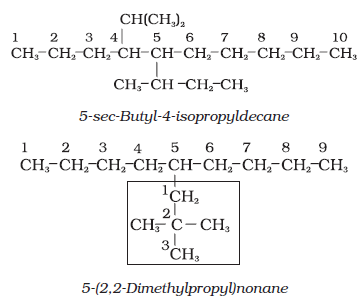
Cyclic Compounds:
A saturated monocyclic compound is named by prefixing ‘cyclo’ to the
corresponding straight chain alkane. If side chains are present, then the rules given above
are applied. Names of some cyclic compounds are given below.

Bicyclic molecule:
A bicyclic molecule (from bi 'two', and cycle 'ring') is a molecule that features two joined rings.
The root of the compound name depends on the total number of atoms in all rings together, possibly
followed by a suffix denoting the functional group with the highest priority. Numbering of the
carbon chain always begins at one bridgehead atom (where the rings meet) and follows the carbon
chain along the longest path, to the next bridgehead atom. Then numbering is continued along the
second longest path and so on. Fused and bridged bicyclic compounds get the prefix bicyclo.
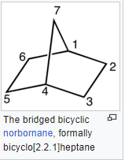
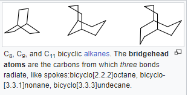
Spiro molecule:
Here, the two rings are connected with a single atom called spiro atom.
Spiro compounds may be fully carbocyclic (all carbon) or heterocyclic (having one or more non-carbon atom).
Spiro Compounds Nomenclature:
- Spiro Compounds have a prefix spiro which represent two rings with a spiro junction.
- Prefix is followed by a square bracket comprising the number of atoms in the smaller ring then
the number of atoms in the larger ring, separated by a period, excluding the spiroatom.
- Position-numbering is done by beginning with an atom of the smaller ring which is near to the
spiroatom around the atoms of that ring, then the spiroatom itself, then around the atoms of
the larger ring.
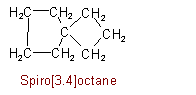
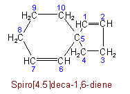
Nomenclature of Organic Compounds having Functional Group(s)
Here, the longest chain of carbon atoms containing the functional group is numbered in such a way
that the functional group is attached at the carbon atom possessing lowest possible
number in the chain.
Alkenes:
Alkenes are named for their parent alkane chain with the suffix "-ene" and a numerical root indicating
the position of the carbon with the lower number for each double bond in the chain.Multiple double
bonds take the form -diene, -triene, etc., with the size prefix of the chain taking an extra "a"
Simple cis and trans isomers may be indicated with a prefixed cis- or trans-.
However, cis- and trans- are relative descriptors. It is IUPAC convention to describe all
alkenes using absolute descriptors of Z- (same side) and E- (opposite)
with the Cahn–Ingold–Prelog priority rules.
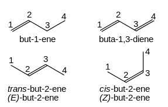
Alkynes:
Alkynes are named using the same system, with the suffix "-yne" indicating a triple bond.

Haloalkanes and haloarenes:
n haloalkanes and haloarenes (R−X), Halogen functional groups are prefixed with the bonding position and
take the form of fluoro-, chloro-, bromo-, iodo-, etc., depending on the halogen.
Multiple groups are dichloro-, trichloro-, etc., and dissimilar groups are ordered alphabetically
as before.

Alcohols:
Alcohols (R−OH) take the suffix "-ol" with a numerical suffix indicating the bonding position.
The suffixes -diol, -triol, -tetraol, etc., are used for multiple −OH groups.
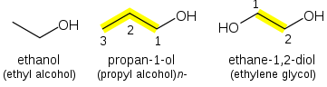
Ethers:
Ethers (R−O−R) consist of an oxygen atom between the two attached carbon chains.
The shorter of the two chains becomes the first part of the name with the -ane suffix
changed to -oxy, and the longer alkane chain becomes the suffix of the name of the ether.
If the oxygen is not attached to the end of the main alkane chain, then the whole shorter
alkyl-plus-ether group is treated as a side-chain and prefixed with its bonding position
on the main chain.
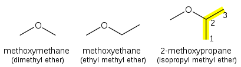
Alternatively, an ether chain can be named as an alkane in which one carbon is replaced by an oxygen,
a replacement denoted by the prefix "oxa". For example, CH3OCH2CH3
could also be called 2-oxabutane.
Aldehydes:
Aldehydes (R−CH=O) take the suffix "-al".The aldehyde funtional group is given the #1 numbering
location and this number is not included in the name.When the -CHO functional group is attached
to a ring the suffix -carbaldehyde is added.

Ketones:
In general ketones (R2C=O) take the suffix "-one".Some common ketones are known by
their generic names.
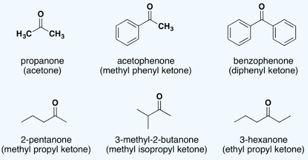
Carboxylic Acids:
In general, carboxylic acids (R−C(=O)OH) are named with the suffix -oic acid
(etymologically a back-formation from benzoic acid). As with aldehydes, the carboxyl functional
group must take the "1" position on the main chain and so the locant need not be stated.

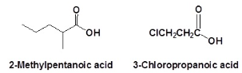
When a carboxyl group is added to a ring the suffix -carboxylic acid is added to the name of the
cyclic compound. The ring carbon attached to the carboxyl group is given the #1 location number.
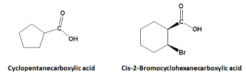
Esters:
Esters (R−C(=O)O−R') are named as alkyl derivatives of carboxylic acids. The alkyl (R') group is
named first. The R−C(=O)O part is then named as a separate word based on the carboxylic acid name,
with the ending changed from -oic acid to -oate.
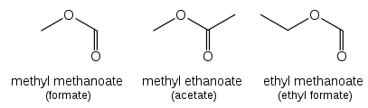
Acid Halides:
The nomenclature of acid halides starts with the name of the corresponding carboxylic acid.
If the corresponding carboxylic acid has an –oic acid or –ic acid ending it is removed and
replaced with the ending -oyl followed by the first syllable of the name of the halogen
along with an –ide ending.
When the corresponding acid includes a -carboxylic acid ending, it is removed and replaced
with the ending -carbonyl. This is followed by the first syllable of the name of the halogen
along with an –ide ending
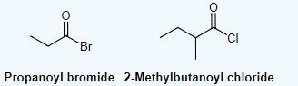
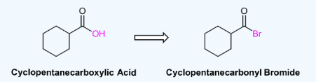
Acid Anhydrides:
he acid anhydride functional group results when two carboxylic acids combine and lose water
(anhydride = without water).
Symmetrical acid anhydrides are named like carboxylic acids except
the ending -acid is replaced with -anhydride. This is true for both the IUPAC and Common nomenclature.
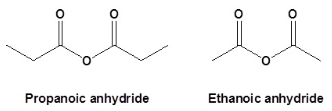
Unsymmetrical acid anhydrides are named by first naming each component carboxylic acid alphabetically
arranged (without the word acid) followed by spaces and then the word anhydride.

Amines:
Primary amines (R−NH2) are named for the attached alkane chain with the suffix "-amine".
If necessary, the bonding position is suffixed.

For secondary amines (of the form R−NH−R), the longest carbon chain attached to the nitrogen atom
becomes the primary name of the amine; the other chain is prefixed as an alkyl group with location
prefix given as an italic N. Tertiary amines (R−NR−R) are treated similarly.

Nitriles:
Name the parent alkane (include the carbon atom of the nitrile as part of the parent) followed with
the word -nitrile. The carbon in the nitrile is given the #1 location position. It is not necessary
to include the location number in the name because it is assumed that the functional group will
be on the end of the parent chain.Cycloalkanes are followed by the word -carbonitrile.
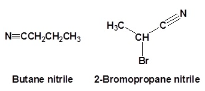
Polyfunctional Group Compounds:
In a polyfunctional compound, one of the functional groups is selected as the principal functional
group (used as suffix) while all other functional groups are treated as substituents(used as prefix).
Functional groups according to their priorities are listed in the priority table in decreasing
order i.e., Carboxylic acid with the highest priority is placed at the top while alkyne being the
least in priority is placed at the bottom. The functional group which has the highest priority
among all the functional groups present in an organic compound is selected as the principle
functional group.
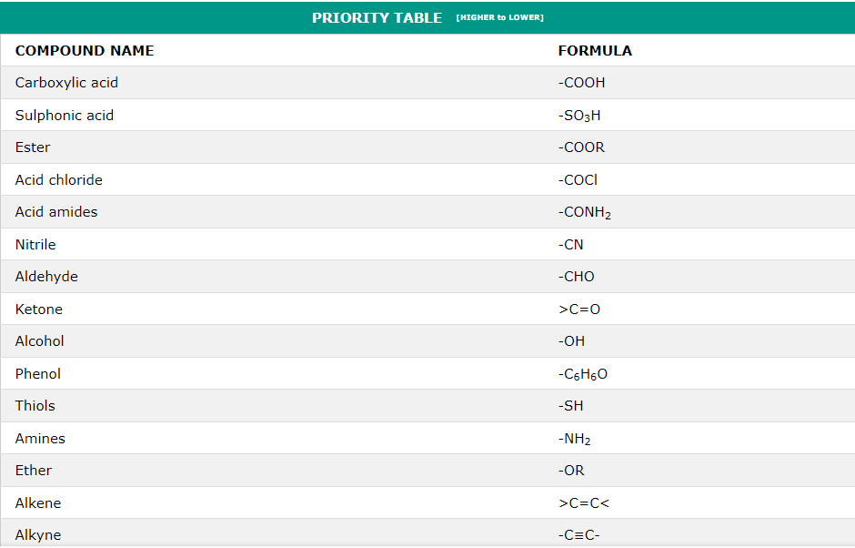
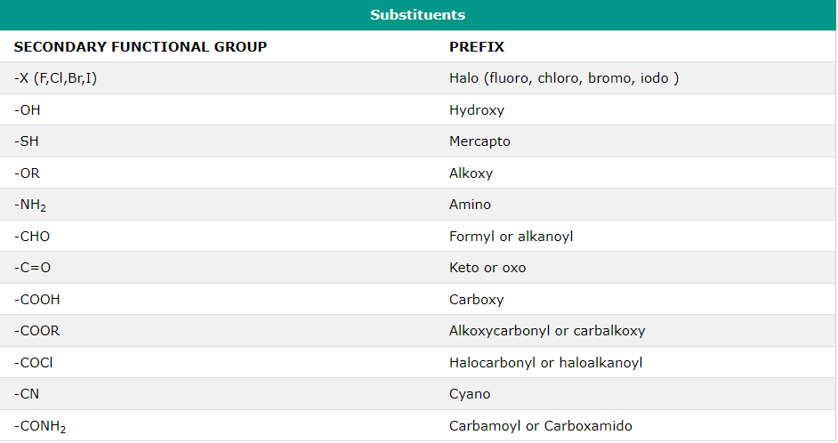

Examples :
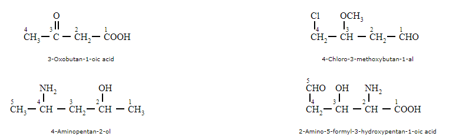
Nomenclature of Substituted Benzene Compounds:
For IUPAC nomenclature of substituted benzene compounds, the substituent is placed as prefix to the
word benzene as shown in the following examples. However,common names (written in bracket below)
of many substituted benzene compounds are also universally used.
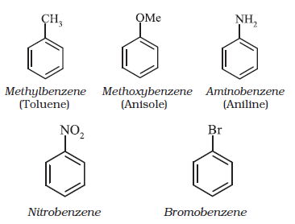

ISOMERISM:
The phenomenon of existence of two or more compounds possessing the same molecular
formula but different properties is known as isomerism. Such compounds are called as isomers.The following flow chart shows
different types of isomerism.
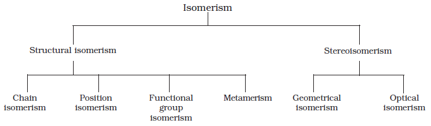
Structural Isomerism:
Compounds having the same molecular formula but different structures (manners in
which atoms are linked) are classified as structural isomers. Some typical examples of
different types of structural isomerism are given below:
(i) Chain isomerism: When two or more compounds have similar molecular formula but
different carbon skeletons, these are referred to as chain isomers and the phenomenon is
termed as chain isomerism. For example, C5H12 represents three compounds:
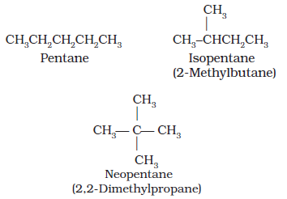
(ii)Position isomerism:
When two or more compounds differ in the position of substituent atom or functional group on the
carbon skeleton, they are called position isomers and this phenomenon is termed as position isomerism.

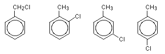
(iii)Functional group isomerism:
Two or more compounds having the same molecular formula but different functional groups are
called functional isomers and this phenomenon is termed as functional group isomerism.
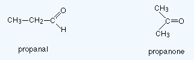
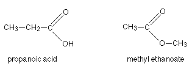
(iv)Metamerism:
Compounds having the same molecular formula but the different number of carbon atoms around the functional
group are known as metamers of each other and the phenomenon is known as metamerism.
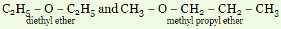
(v)Tautomerism:
Tautomerism is a phenomenon where a single chemical compound tends to exist in two or more interconvertible
structures that are different in terms of the relative position of one atomic nucleus, which is generally
hydrogen.It is also called desmotropism.
Care should be taken not to confuse tautomers with depictions of "contributing structures" in chemical
resonance. Tautomers are distinct chemical species that can be distinguished by their differing atomic
connectivities, molecular geometries, and physicochemical and spectroscopic properties,[6] whereas
resonance forms are merely alternative Lewis structure (valence bond theory) depictions of a single
chemical species, whose true structure is a quantum superposition, essentially the "average" of the
idealized, hypothetical geometries implied by these resonance forms.
The most common type of tautomerism is that involving carbonyl, or keto, compounds and unsaturated
hydroxyl compounds, or enols; the structural change is the shift of a hydrogen atom between atoms
of carbon and oxygen, with the rearrangement of bonds as indicated:

In many aliphatic aldehydes and ketones, such as acetaldehyde, the keto form is the predominant one;
in phenols, the enol form, which is stabilized by the aromatic character of the benzene ring, is the major
component.
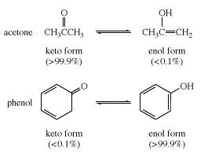
Stereoisomerism:
Stereoisomerism, or Spatial isomerism, is a form of isomerism in which molecules have the
same molecular formula and sequence of bonded atoms (constitution), but differ in the
three-dimensional orientations of their atoms in space.This contrasts with structural
isomers, which share the same molecular formula, but the bond connections or their order
differs. By definition, molecules that are stereoisomers of each other represent the same
structural isomer.
Geometric isomerism(Cis–trans and E-Z isomerism):
Stereoisomerism about double bonds arises because rotation about the double bond is
restricted, keeping the substituents fixed relative to each other.[5] If the two
substituents on at least one end of a double bond are the same, then there is no
stereoisomer and the double bond is not a stereocenter,
e.g. propene, CH
3CH=CH
2 where the two substituents at one
end are both H.
Traditionally, double bond stereochemistry was described as either cis (Latin, on this side)
or trans (Latin, across), in reference to the relative position of substituents on either
side of a double bond. A simple example of cis-trans isomerism is the 1,2-disubstituted
ethenes, like the dichloroethene (C
2H
2Cl
2) isomers
shown below.
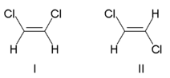
Molecule I is cis-1,2-dichloroethene and molecule II is trans-1,2-dichloroethene.
Due to occasional ambiguity, IUPAC adopted a more rigorous system wherein the
substituents at each end of the double bond are assigned priority based on their
atomic number. If the high-priority substituents are on the same side of the bond,
it is assigned Z (Ger. zusammen, together). If they are on opposite sides,
it is E (Ger. entgegen, opposite).Since chlorine has a larger atomic number
than hydrogen, it is the highest-priority group.Using this notation to name
the above pictured molecules, molecule I is (Z)-1,2-dichloroethene and
molecule II is (E)-1,2-dichloroethene. It is not the case that Z and cis or
E and trans are always interchangeable. Consider the following fluoromethylpentene:

The proper name for this molecule is either trans-2-fluoro-3-methylpent-2-ene because
the alkyl groups that form the backbone chain (i.e., methyl and ethyl) reside across
the double bond from each other, or (Z)-2-fluoro-3-methylpent-2-ene because the
highest-priority groups on each side of the double bond are on the same side of
the double bond. Fluoro is the highest-priority group on the left side of the
double bond, and ethyl is the highest-priority group on the right side of the molecule.
Difference between cis and trans isomers
| cis isomer |
trans isomer |
| Cis isomers are almost always polar. |
Trans isomers are not very polar. Many trans isomers are non-polar molecules. |
| Due to loosely packed molecules, cis isomers have relatively lower melting points
than trans isomers.
|
Due to tightly packed molecules, the melting points of trans isomers are usually
higher than those of cis isomers.
|
| The boiling point of cis isomers is high due to the presence of strong forces of
attraction between the atoms of the cis isomer. |
The boiling point is comparatively low for trans isomers as there are no strong
attractive forces. |
OPTICAL (CONFIGURATIONAL) ISOMERISM::
Optical isomerism is another class of stereoisomerism. The organic compounds that exhibit
optical isomerism must have a unique ability to rotate the plane polarized light either towards left
or towards right hand directions. This unique ability is generally known as optical activity.
Optical activity of any compound is measured by analyzing the sample in an instrument called
Polarimeter. A solution of known concentration of optically active compound is when exposed
to the beam of plane polarized light, the beam of plane polarized light is rotated through a certain
number of degrees, either to the clockwise (right) direction or anti-clockwise (left) direction. The
compound which rotates the plane polarized light towards clockwise direction is called to be
dextrorotatory (represented by +); whereas, the compound which rotates the plane polarized
light towards anti-clockwise direction is called to be levorotatory (represented by -). Figure 1
shows the schematic representation of polarimeter.

The degree of rotation depends upon the number of the molecules of the compounds
falls in the path of beam. To compare the rotating power of different optically active
compounds, the specific rotation of each compound is calculated and then comparison
should be made.
Specific rotation is defined as the degree of rotation offered for the given wavelength
of plane polarized light at given temperature by a solution of 1g/mL concentration is
filled in a 10 cm length sample cell. Specific rotation is represented by and can
be calculated as:
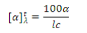
Where α is observed angle of rotation; t is the temperature of during experiment; λ is the
wavelength of light used; l is the length of the tube in decimeter; and c is the concentration of the
compounds per 100 mL of solution.
ELEMENTS OF SYMMETRY:All optically active molecules/object are chiral and they exhibit enantiomerism (Figure 2). A
chiral molecule is that which cannot be superimposed on its mirror image; however, both the
non-super imposable isomers are called enantiomers.Elements of symmetry are a simple tool to identify whether a molecule is chiral or not. The
necessary condition for optically active molecule to be chiral is that, the molecule should not
possess any kind of symmetry elements. The elements of symmetry are generally categorized as
follows:
- Simple axis of symmetry (Cn)
- Plane of symmetry (σ)
- Centre of symmetry (Ci)
- Alternating axis of symmetry (Sn)
MOLECULAR CHIRALITY, ENANTIOMERISM:
The necessary condition for a molecule to have optical isomerism is that molecule should not
have any kind of symmetry elements present in it, in other words the molecule should be
dissymmetric. Such molecules are called ‘Chiral’ and the property is called ‘molecular
chirality’. Optically active chiral molecules which are non-super imposable on their mirror
images are called ‘enantiomers’ and the phenomenon is known as ‘enantiomerism’. To exhibit
optical isomerism an organic compound must have at least one asymmetric carbon atom. An
asymmetric carbon atom is that which is bonded to four different atoms or groups.

CHIRAL AND ACHIRAL MOLECULES WITH TWO STEREOGENIC CENTRES:
Let us consider the stereoisomers of Tartaric acid which has two stereo centers with identical
atoms/groups attached to both the stereo centers. The tartaric acid have two stereo centers and
can have four stereoisomers out of which two stereoisomers are non-super imposable mirror
image of each other called enantiomers and chiral; and rest two are identical to each other and
also have plane of symmetry hence it can be divided in to two equal halves, therefore are achiral.
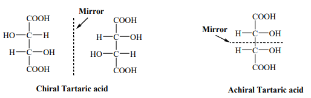
DIASTEREOMERS:
Diastereomers are those stereoisomers that are not mirror image of each other, in other words
you can understand the diastereomers are stereoisomers that are not enantiomers. Diastereomers
are non-enantiomeric stereoisomers with two or more stereo centers.
FUNDAMENTAL CONCEPTS IN ORGANIC REACTION MECHANISM:
In an organic reaction, the organic molecule (also referred as a substrate) reacts
with an appropriate attacking reagent and leads to the
formation of one or more intermediate(s) and finally product(s).The general reaction
is depicted as follows :

In such a reaction a covalent bond
between two carbon atoms or a carbon and
some other atom is broken and a new bond is
formed. A sequential account of each step,
describing details of electron movement,
energetics during bond cleavage and bond
formation, and the rates of transformation
of reactants into products (kinetics) is
referred to as reaction mechanism.
Fission of a Covalent Bond:
In chemistry, bond cleavage, or bond fission, is the splitting of chemical bonds.
In general, there are two classifications for bond cleavage: homolytic and heterolytic,
depending on the nature of the process.
Homolytic cleavage:In homolytic cleavage, or homolysis, the two electrons in
a cleaved covalent bond are divided equally between the products. This process is also
known as homolytic fission or radical fission.
Such cleavage results in the formation of neutral species (atom or group)
which contains an unpaired electron. These species are called free radicals.
Free radicals are very reactive.

Alkyl radicals are classified as primary,secondary, or tertiary. Alkyl radical stability
increases as we proceed from primary to tertiary:
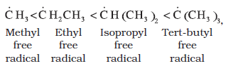
Organic reactions, which proceed by homolytic fission are called free radical or
homopolar or nonpolar reactions.
Heterolytic cleavage:In heterolytic cleavage, or heterolysis,
the bond breaks in such a fashion that the originally-shared pair of electrons remain with
one of the fragments. Thus, a fragment gains an electron, having both bonding electrons,
while the other fragment loses an electron. This process is also known as ionic fission.
After heterolysis, one atom has a sextet electronic structure and a positive charge and
the other, a valence octet with at least one lone pair and a negative charge. Thus,
heterolytic cleavage of bromomethane will give CH3+
and Br- as shown below.
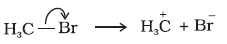
A species having a carbon atom possessing sextext of electrons and a positive charge is
called a carbocation (earlier called carbonium ion).Carbocations are
classified as primary, secondary or tertiary depending on whether one, two or three
carbons are directly attached to the positively charged carbon.Carbocations are highly unstable and reactive
species. Alkyl groups directly attached to the positively charged carbon stabilise the
carbocations due to inductive and hyperconjugation effects.The observed order of carbocation
stability is:
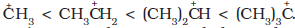
These carbocations have trigonal planar shape with positively charged carbon
being sp2 hybridised.
The heterolytic cleavage can also give a species in which carbon gets the shared pair
of electrons.
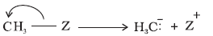
Such a carbon species carrying a negative charge on carbon atom is called
carbanion. Carbanions are also unstable and reactive species. The organic reactions which
proceed through heterolytic bond cleavage are called ionic or heteropolar or just polar
reactions.
Nucleophiles and Electrophiles:
Nucleophile:A nucleophile is a chemical species that forms bonds by donating an
electron pair. All molecules and ions with a free pair of electrons or at least one pi
bond can act as nucleophiles. Because nucleophiles donate electrons, they are Lewis bases.
Nucleophilic describes the affinity of a nucleophile to bond with positively charged
atomic nuclei. Nucleophilicity, sometimes referred to as nucleophile strength, refers
to a substance's nucleophilic character and is often used to compare the affinity of atoms.
Neutral nucleophilic reactions with solvents such as alcohols and water are named
solvolysis. Nucleophiles may take part in nucleophilic substitution, whereby a
nucleophile becomes attracted to a full or partial positive charge, and nucleophilic
addition.
Nucleophilicity is closely related to basicity. The difference between the
two is, that basicity is a thermodynamic property (i.e. relates to an equilibrium state),
but nucleophilicity is a kinetic property, which relates to rates of certain chemical
reactions.
Examples:
(i)Electron rich species and have affinity towards nucleus (which is positively charged).
(ii)Neutral nucleophiles are capable of donating a pair of electrons e.g.
Nucleophilicity:
1. Species with negative charge are stronger nucleophiles than analogous species
without a negative charge.

2. Nucleophilicity decreases from left to right across the periodic table eg.
3. Nucleophilicity increases down the periodic table.

4.When donor atom is identical, then nucleophilicity increases with increase in basic strength.
OH- > CH3COO-
Electrophile:
an electrophile is a chemical species that forms bonds with nucleophiles by accepting
an electron pair.[1] Because electrophiles accept electrons, they are Lewis acids.
Most electrophiles are positively charged, have an atom that carries a partial
positive charge, or have an atom that does not have an octet of electrons.
Electrophiles mainly interact with nucleophiles through addition and substitution
reactions. Frequently seen electrophiles in organic syntheses include
- Cations such as H+ and NO+
- Polarized neutral molecules such as HCl,alkyl halides, acyl halides, and carbonyl compounds,
- Polarizable neutral molecules such as Cl2 and Br2
- oxidizing agents such as organic peracids, chemical species that
do not satisfy the octet rule such as carbenes and radicals, and some Lewis
acids such as BH3 and DIBAL
Electron Displacement Effects in Covalent Bonds:
The electron displacement in an organic molecule may take place either in the ground
state under the influence of an atom or a substituent group or in the presence of an
appropriate attacking reagent. The electron displacements due to the influence of
an atom or a substituent group present in the molecule cause permanent polarlisation
of the bond. Inductive effect and resonance effects are examples of this type of
electron displacements. Temporary electron displacement effects are seen in a molecule
when a reagent approaches to attack it. This type of electron displacement is called
electromeric effect or polarisability effect. In the following sections we will learn
about these types of electronic displacements.
Inductive Effect:
Inductive effect in a molecule is a local change in the electron density due to
electron-withdrawing or electron-donating groups elsewhere in the molecule, resulting
in a permanent dipole in a bond.It is present in a σ (sigma) bond, unlike the
electromeric effect which is present in a π (pi) bond.The I effect is a permanent effect &
generally represented by an arrow on the bond.Moreover, the inductive effect is feeble since it involves the shift of strongly held σ-bond electrons and other stronger factors may overshadow this effect.
The halogen atoms in an alkyl halide are electron withdrawing while the alkyl groups have
electron donating tendencies. If the electronegative atom (missing an electron, thus having
a positive charge) is then joined to a chain of atoms, usually carbon, the positive charge
is relayed to the other atoms in the chain. This is the electron-withdrawing inductive
effect, also known as the -I effect. In short, alkyl groups tend to donate electrons,
leading to the +I effect. Its experimental basis is the ionization constant.
Relative inductive effects:Relative inductive effects have been experimentally
measured through the resulting pKa of a nearby carboxylic acid group (see § Carboxylic
acids). In increasing order of +I effect or decreasing order of -I effect, common
functional groups are:
Hydrogen subsituents also exhibit an isotope effect: relative to the same order,
–T > –D > –H,
where H is hydrogen, D deuterium, and T tritium.
The strength of inductive effect is also dependent on the distance between the substituent
group and the main group that react; the longer the distance, the weaker the effect.
Inductive effects can be expressed quantitatively through the Hammett equation,
which describes the relationship between reaction rates and equilibrium constants with
respect to substituent.
Applications of Inductive Effect:The inductive effect also plays a vital role in
deciding the acidity and basicity of a molecule. Groups having +I effect (Inductive effect)
attached to a molecule increases the overall electron density on the molecule and the
molecule is able to donate electrons, making it basic. Similarly, groups having -I effect
attached to a molecule decreases the overall electron density on the molecule making it
electron deficient which results in its acidity. As the number of -I groups attached to
a molecule increases, its acidity increases; as the number of +I groups on a molecule
increases, its basicity increases.
Carboxylic acids:The strength of a carboxylic acid depends on the extent of its
ionization constant: the more ionized it is, the stronger it is. As an acid becomes
stronger, the numerical value of its pKa drops.
In acids, the electron-releasing inductive effect of the alkyl group increases the electron
density on oxygen and thus hinders the breaking of the O-H bond, which consequently
reduces the ionization. Due to its greater ionization, formic acid (pKa=3.74) is s
tronger than acetic acid (pKa=4.76). Monochloroacetic acid (pKa=2.82), though, is
stronger than formic acid, due to the electron-withdrawing effect of chlorine promoting
ionization.
In benzoic acid, the carbon atoms which are present in the ring are sp2 hybridised. As
a result, benzoic acid (pKa=4.20) is a stronger acid than cyclohexanecarboxylic acid
(pKa=4.87). Also, in aromatic carboxylic acids, electron-withdrawing groups substituted
at the ortho and para positions can enhance the acid strength.
Since the carboxyl group is itself an electron-withdrawing group, dicarboxylic acids are,
in general, stronger acids than their monocarboxyl analogues.
INDUCTOMETRIC EFFECT: Consider the inductive effect in a bond
. When some
negatively charged ion approaches A, the inductive effect between
A – B is temporarily increased which is known as inductometric effect.
RESONANCE:There are many organic molecules whose
behaviour cannot be explained by a single Lewis structure. An example is that of
benzene.
Its cyclic structure containing alternating C–C single
and C=C double bonds shown is inadequate for explaining its characteristic properties.
As per the above representation, benzene should exhibit two different bond lengths, due
to C–C single and C=C double bonds. However, as determined experimentally benzene has a
uniform C–C bond distances of 139 pm, a value intermediate between the C–C
single(154 pm) and C=C double (134 pm) bonds. Thus, the structure of benzene cannot
be represented adequately by the above structure. Further, benzene can be
represented equally well by the energetically identical structures I and II.
Therefore, according to the resonance theory the actual structure of benzene
cannot be adequately represented by any of these structures, rather it is a hybrid of the
two structures (I and II) called resonance structures. The resonance structures
(canonical structures or contributing structures) are hypothetical and
individually do not represent any real molecule. They contribute to the actual
structure in proportion to their stability.
The energy of actual structure of the molecule (the resonance hybrid) is lower than
that of any of the canonical structures. The difference in energy between the actual
structure and the lowest energy resonance structure is called the resonance
stabilisation energy or simply the resonance energy. The more the number of
important contributing structures, the more is the resonance energy. Resonance is
particularly important when the contributing structures are equivalent in energy.
The following rules are applied while writing
resonance structures:
The resonance structures have
(i)the same positions of nuclei and
(ii)the same number of unpaired electrons.
Among the resonance structures, the one which has more number
of covalent bonds, all the atoms with octet of
electrons (except hydrogen which has a
duplet), less separation of opposite charges,
(a negative charge if any on more
electronegative atom, a positive charge if any
on more electropositive atom) and more
dispersal of charge, is more stable than others.
Resonance Effect or Mesomeric Effect
(i) Positive Resonance Effect (+R effect)
In this effect, the transfer of electrons is away
from an atom or substituent group attached
to the conjugated system. This electron
displacement makes certain positions in the
molecule of high electron densities. This effect
in aniline is shown as :

(ii) Negative Resonance Effect (- R effect)
This effect is observed when the transfer of
electrons is towards the atom or substituent
group attached to the conjugated system. For
example in nitrobenzene this electron
displacement can be depicted as :

The atoms or substituent groups, which
represent +R or –R electron displacement
effects are as follows :
The presence of alternate single and
double bonds in an open chain or cyclic
system is termed as a conjugated system.
These systems often show abnormal
behaviour. The examples are 1,3- butadiene,
aniline and nitrobenzene etc. In such systems,
the π-electrons are delocalised and the system
develops polarity.

Electromeric Effect (E effect)
It is a temporary effect. The organic
compounds having a multiple bond (a double
or triple bond) show this effect in the presence
of an attacking reagent only. It is defined as
the complete transfer of a shared pair of
π-electrons to one of the atoms joined by a
multiple bond on the demand of an attacking
reagent. The effect is annulled as soon as the
attacking reagent is removed from the domain
of the reaction. It is represented by E and the
shifting of the electrons is shown by a curved
arrow ( ). There are two distinct types of
electromeric effect.
(i) Positive Eelctromeric Effect (+E effect)
In this effect the π−electrons of the multiple bond
are transferred to that atom to which the
reagent gets attached. For example :
(ii) Negative Electromeric Effect (–E effect)
In this effect the π - electrons of the multiple
bond are transferred to that atom to which
the attacking reagent does not get attached.
For example:
Hyperconjugation
Hyperconjugation is a general stabilising
interaction. It involves delocalisation of
σ electrons of C—H bond of an alkyl group
directly attached to an atom of unsaturated
system or to an atom with an unshared
p orbital. The σ electrons of C—H bond of the
alkyl group enter into partial conjugation with
the attached unsaturated system or with the
unshared p orbital. Hyperconjugation is a
permanent effect.
To understand hyperconjugation effect, let
us take an example of CH3 CH2+
(ethyl cation)
in which the positively charged carbon atom
has an empty p orbital. One of the C-H bonds
of the methyl group can align in the plane of
this empty p orbital and the electrons
constituting the C-H bond in plane with this
p orbital can then be delocalised into the
empty p orbital as depicted in Fig.
This type of overlap stabilises the
carbocation because electron density from the
adjacent σ bond helps in dispersing the
positive charge.
In general, greater the number of alkyl
groups attached to a positively charged carbon
atom, the greater is the hyperconjugation
interaction and stabilisation of the cation.
Thus, we have the following relative stability
of carbocations :
Hyperconjugation is also possible in
alkenes and alkylarenes.
Delocalisation of electrons by
hyperconjugation in the case of alkene can
be depicted as in Fig.
There are various ways of looking at the
hyperconjugative effect. One of the way is to
regard C—H bond as possessing partial ionic
character due to resonance.
The hyperconjugation may also be
regarded as no bond resonance.
Types of Organic Reactions and
Mechanisms
Organic reactions can be classified into the
following categories:
(i) Substitution reactions
(ii) Addition reactions
(iii) Elimination reactions
(iv) Rearrangement reactions
METHODS OF PURIFICATION OF
ORGANIC COMPOUNDS
Once an organic compound is extracted from
a natural source or synthesised in the
laboratory, it is essential to purify it. Various
methods used for the purification of organic
compounds are based on the nature of the
compound and the impurity present in it.
The common techniques used for
purification are as follows :
(i) Sublimation
(ii) Crystallisation
(iii) Distillation
(iv) Differential extraction and
(v) Chromatography
Finally, the purity of a compound is
ascertained by determining its melting or
boiling point. Most of the pure compounds
have sharp melting points and boiling points
New methods of checking the purity of an
organic compound are based on different
types of chromatographic and spectroscopic
techniques.
Sublimation
We know that on heating, some
solid substances change from solid to vapour
state without passing through liquid state.
The purification technique based on the above
principle is known as sublimation and is used
to separate sublimable compounds from nonsublimable impurities.
Crystallisation
This is one of the most commonly used
techniques for the purification of solid organic
compounds. It is based on the difference in
the solubilities of the compound and the
impurities in a suitable solvent. The impure
compound is dissolved in a solvent in which
it is sparingly soluble at room temperature
but appreciably soluble at higher
temperature. The solution is concentrated to
get a nearly saturated solution. On cooling
the solution, pure compound crystallises out
and is removed by filtration. The filtrate
(mother liquor) contains impurities and small
quantity of the compound. If the compound
is highly soluble in one solvent and very little
soluble in another solvent, crystallisation can
be satisfactorily carried out in a mixture of
these solvents. Impurities, which impart
colour to the solution are removed by
adsorbing over activated charcoal. Repeated
crystallisation becomes necessary for the
purification of compounds containing
impurities of comparable solubilities
Simple Distillation
This important method is used to separate (i)
volatile liquids from nonvolatile impurities and
(ii) the liquids having sufficient difference in
their boiling points. Liquids having different
boiling points vaporise at different
temperatures. The vapours are cooled and the
liquids so formed are collected separately.
Chloroform (b.p 334 K) and aniline (b.p. 457
K) are easily separated by the technique of
distillation (as shown in the following figure) .
The liquid mixture is
taken in a round bottom flask and
heated carefully. On boiling, the
vapours of lower boiling component
are formed first. The vapours are
condensed by using a condenser and
the liquid is collected in a receiver. The
vapours of higher boiling component
form later and the liquid can be
collected separately.
Fractional Distillation:
If the
difference in boiling points of two
liquids is not much, simple distillation
cannot be used to separate them. The
vapours of such liquids are formed
within the same temperature range and
are condensed simultaneously. The
technique of fractional distillation is
used in such cases. In this technique,
vapours of a liquid mixture are passed
through a fractionating column before
condensation. The fractionating
column is fitted over the mouth of the
round bottom flask (as shown in the following figure)
Vapours of the liquid with higher boiling
point condense before the vapours of the
liquid with lower boiling point. The vapours
rising up in the fractionating column become
richer in more volatile component. By the time
the vapours reach to the top of the
fractionating column, these are rich in the
more volatile component. Fractionating
columns are available in various sizes and
designs as shown in the figure. A fractionating
column provides many surfaces for heat
exchange between the ascending vapours
and the descending condensed liquid. Some
of the condensing liquid in the fractionating
column obtains heat from the ascending
vapours and revaporises. The vapours thus
become richer in low boiling component. The
vapours of low boiling component ascend to
the top of the column. On reaching the top,
the vapours become pure in low boiling
component and pass through the condenser
and the pure liquid is collected in a receiver.
After a series of successive distillations, the
remaining liquid in the distillation flask gets
enriched in high boiling component. Each
successive condensation and vaporisation
unit in the fractionating column is called a
theoretical plate. Commercially, columns
with hundreds of plates are available.
One of the technological applications of
fractional distillation is to separate different
fractions of crude oil in petroleum industry.
Distillation under reduced pressure: This
method is used to purify liquids having very
high boiling points and those, which
decompose at or below their boiling points.
Such liquids are made to boil at a temperature
lower than their normal boiling points by
reducing the pressure on their surface. A
liquid boils at a temperature at which its
vapour pressure is equal to the external
pressure. The pressure is reduced with the
help of a water pump or vacuum pump
. Glycerol can be separated from
spent-lye in soap industry by using this
technique.
Steam Distillation: This technique is
applied to separate substances which are
steam volatile and are immiscible with
water. In steam distillation, steam from a
steam generator is passed through a heated
flask containing the liquid to be distilled.
The mixture of steam and the volatile
organic compound is condensed and
collected. The compound is later separated
from water using a separating funnel(as shown in figure).
In steam distillation, the liquid boils when
the sum of vapour pressures due to the
organic liquid (p1) and that due to water
(p2) becomes equal to the atmospheric
pressure (p), i.e. p =p1+ p2. Since p1 is
lower than p, the organic liquid vaporises
at lower temperature than its boiling
point.
Thus, if one of the substances in the
mixture is water and the other, a water
insoluble substance, then the mixture will boil
close to but below, 373K. A mixture of water
and the substance is obtained which can be
separated by using a separating funnel.
Aniline is separated by this technique from
aniline – water mixture .
Differential Extraction
When an organic compound is present in an
aqueous medium, it is separated by shaking
it with an organic solvent in which it is more
soluble than in water. The organic solvent and
the aqueous solution should be immiscible
with each other so that they form two distinct
layers which can be separated by separatory
funnel. The organic solvent is later removed
by distillation or by evaporation to get back
the compound. Differential extraction is
carried out in a separatory funnel as shown
in the following figure.

If the organic compound is less
soluble in the organic solvent, a very large
quantity of solvent would be required to
extract even a very small quantity of the
compound. The technique of continuous
extraction is employed in such cases. In this
technique same solvent is repeatedly used for
extraction of the compound.
Chromatography:
Chromatography is an important technique
extensively used to separate mixtures into
their components, purify compounds and also
to test the purity of compounds. The name
chromatography is based on the Greek word
chroma, for colour since the method was first
used for the separation of coloured
substances found in plants. In this technique,
the mixture of substances is applied onto a
stationary phase, which may be a solid or a
liquid. A pure solvent, a mixture of solvents,
or a gas is allowed to move slowly over the
stationary phase. The components of the
mixture get gradually separated from one
another. The moving phase is called the mobile
phase.
Based on the principle involved,
chromatography is classified into different
categories. Two of these are:
(a) Adsorption chromatography, and
(b) Partition chromatography.
Column Chromatography: Column
chromatography involves separation of a
mixture over a column of adsorbent
(stationary phase) packed in a glass tube. The
column is fitted with a stopcock at its lower end.
The mixture adsorbed on adsorbent is placed on the top of the adsorbent
column packed in a glass tube. An appropriate
eluant which is a liquid or a mixture of liquids
is allowed to flow down the column slowly.
Depending upon the degree to which the
compounds are adsorbed, complete separation
takes place. The most readily adsorbed
substances are retained near the top and others
come down to various distances in the column
Thin Layer Chromatography: Thin layer
chromatography (TLC) is another type of
adsorption chromatography, which involves
separation of substances of a mixture over a
thin layer of an adsorbent coated on glass
plate. A thin layer (about 0.2mm thick) of an
adsorbent (silica gel or alumina) is spread over
a glass plate of suitable size. The plate is
known as thin layer chromatography plate or
chromaplate. The solution of the mixture to
be separated is applied as a small spot about
2 cm above one end of the TLC plate. The
glass plate is then placed in a closed jar
containing the eluant.
As the
eluant rises up the plate, the components of
the mixture move up along with the eluant to
different distances depending on their degree
of adsorption and separation takes place. The
relative adsorption of each component of the
mixture is expressed in terms of its
retardation factor i.e. Rf
value
The spots of coloured compounds are visible
on TLC plate due to their original colour. The
spots of colourless compounds, which are
invisible to the eye but fluoresce in ultraviolet
light, can be detected by putting the plate under
ultraviolet light. Another detection technique is
to place the plate in a covered jar containing a
few crystals of iodine. Spots of compounds,
which adsorb iodine, will show up as brown
spots. Sometimes an appropriate reagent may
also be sprayed on the plate. For example, amino
acids may be detected by spraying the plate with
ninhydrin solution .
Partition Chromatography: Partition
chromatography is based on continuous
differential partitioning of components of a
mixture between stationary and mobile
phases. Paper chromatography is a type of
partition chromatography. In paper
chromatography, a special quality paper
known as chromatography paper is used.
Chromatography paper contains water
trapped in it, which acts as the stationary
phase.
A strip of chromatography paper spotted
at the base with the solution of the mixture is
suspended in a suitable solvent or a mixture
of solvents . This solvent acts as
the mobile phase. The solvent rises up the
paper by capillary action and flows over the
spot. The paper selectively retains different
components according to their differing
partition in the two phases. The paper strip
so developed is known as a chromatogram.
The spots of the separated coloured
compounds are visible at different heights
from the position of initial spot on the
chromatogram. The spots of the separated
colourless compounds may be observed either
under ultraviolet light or by the use of an
appropriate spray reagent as discussed under
thin layer chromatography.
QUALITATIVE ANALYSIS OF ORGANIC COMPOUNDS
The elements present in organic compounds
are carbon and hydrogen. In addition to these,
they may also contain oxygen, nitrogen,
sulphur, halogens and phosphorus.
Detection of Carbon and Hydrogen:
Carbon and hydrogen are detected by heating
the compound with copper(II) oxide. Carbon
present in the compound is oxidised to carbon
dioxide (tested with lime-water, which
develops turbidity) and hydrogen to water
(tested with anhydrous copper sulphate,
which turns blue).
Detection of Other Elements:
Nitrogen, sulphur, halogens and phosphorus
present in an organic compound are detected
by “Lassaigne’s test”. The elements present
in the compound are converted from covalent
form into the ionic form by fusing the
compound with sodium metal. Following
reactions take place:
C, N, S and X come from organic
compound.
Cyanide, sulphide and halide of sodium
so formed on sodium fusion are extracted from
the fused mass by boiling it with distilled
water. This extract is known as sodium fusion
extract.
(I) Test for Nitrogen:
The sodium fusion extract is boiled with
iron(II) sulphate and then acidified with
concentrated sulphuric acid. The formation
of Prussian blue colour confirms the presence
of nitrogen. Sodium cyanide first reacts
with iron(II) sulphate and forms sodium
hexacyanoferrate(II). On heating with
concentrated sulphuric acid some iron(II) ions
are oxidised to iron(III) ions which react with
sodium hexacyanoferrate(II) to produce
iron(III) hexacyanoferrate(II) (ferriferrocyanide)
which is Prussian blue in colour.
(II) Test for Sulphur:
(a) The sodium fusion extract is acidified
with acetic acid and lead acetate is added
to it. A black precipitate of lead sulphide
indicates the presence of sulphur.
Pb2+ + S2– ⎯→ PbS
Black
(b) On treating sodium fusion extract with
sodium nitroprusside, appearance of a violet
colour further indicates the presence
of sulphur.
In case, nitrogen and sulphur both are
present in an organic compound, sodium
thiocyanate is formed. It gives blood red
colour and no Prussian blue since there are
no free cyanide ions.
If sodium fusion is carried out with excess
of sodium, the thiocyanate decomposes to
yield cyanide and sulphide. These ions give
their usual tests.
(III) Test for Halogens:
The sodium fusion extract is acidified with
nitric acid and then treated with silver nitrate.
A white precipitate, soluble in ammonium
hydroxide shows the presence of chlorine, a
yellowish precipitate, sparingly soluble in
ammonium hydroxide shows the presence of
bromine and a yellow precipitate, insoluble
in ammonium hydroxide shows the presence
of iodine.
If nitrogen or sulphur is also present in the
compound, the sodium fusion extract is first
boiled with concentrated nitric acid to
decompose cyanide or sulphide of sodium
formed during Lassaigne’s test. These ions
would otherwise interfere with silver nitrate
test for halogens.
(IV) Test for Phosphorus:
The compound is heated with an oxidising
agent (sodium peroxide). The phosphorus
present in the compound is oxidised to
phosphate. The solution is boiled with nitric
acid and then treated with ammonium
molybdate. A yellow colouration or precipitate
indicates the presence of phosphorus.
QUANTITATIVE ANALYSIS:
The percentage composition of elements
present in an organic compound is
determined by the methods based on the
following principles:
Carbon and Hydrogen:
Both carbon and hydrogen are estimated in
one experiment. A known mass of an organic
compound is burnt in the presence of excess
of oxygen and copper(II) oxide. Carbon and
hydrogen in the compound are oxidised to
carbon dioxide and water respectively.
The mass of water produced is determined
by passing the mixture through a weighed
U-tube containing anhydrous calcium
chloride. Carbon dioxide is absorbed in
another U-tube containing concentrated
solution of potassium hydroxide. These tubes
are connected in series .
increase in masses of calcium chloride and
potassium hydroxide gives the amounts of
water and carbon dioxide from which the
percentages of carbon and hydrogen are
calculated.
Let the mass of organic compound be
m g, mass of water and carbon dioxide
produced be m1 and m2 g respectively;
Nitrogen:
There are two methods for estimation of
nitrogen: (i) Dumas method and (ii) Kjeldahl’s
method.
(i) Dumas method: The nitrogen containing
organic compound, when heated with copper
oxide in an atmosphere of carbon dioxide,
yields free nitrogen in addition to carbon
dioxide and water.
Traces of nitrogen oxides formed, if any,
are reduced to nitrogen by passing the
gaseous mixture over a heated copper gauze.
The mixture of gases so produced is collected
over an aqueous solution of potassium
hydroxide which absorbs carbon dioxide.
Nitrogen is collected in the upper part of the
graduated tube
Where p1
and V1
are the pressure and volume
of nitrogen, p1
is different from the
atmospheric pressure at which nitrogen gas
is collected. The value of p1
is obtained by
the relation;
(ii) Kjeldahl’s method: The compound
containing nitrogen is heated with
concentrated sulphuric acid. Nitrogen in the
compound gets converted to ammonium
sulphate . The resulting acid
mixture is then heated with excess of sodium hydroxide.
The liberated ammonia gas is
absorbed in an excess of standard solution of
sulphuric acid. The amount of ammonia
produced is determined by estimating the
amount of sulphuric acid consumed in the
reaction. It is done by estimating unreacted
sulphuric acid left after the absorption of
ammonia by titrating it with standard alkali
solution. The difference between the initial
amount of acid taken and that left after the
reaction gives the amount of acid reacted with
ammonia.

Kjeldahl method is not applicable to
compounds containing nitrogen in nitro and
azo groups and nitrogen present in the ring
(e.g. pyridine) as nitrogen of these compounds
does not change to ammonium sulphate
under these conditions.
Halogens:
Carius method: A known mass of an organic
compound is heated with fuming nitric acid
in the presence of silver nitrate contained in
a hard glass tube known as Carius tube,
in a furnace. Carbon and hydrogen present in
the compound are oxidised to
carbon dioxide and water. The halogen
present forms the corresponding silver halide
(AgX). It is filtered, washed, dried and weighed.
Let the mass of organic

Sulphur:
A known mass of an organic compound is
heated in a Carius tube with sodium peroxide
or fuming nitric acid. Sulphur present in the
compound is oxidised to sulphuric acid. It is
precipitated as barium sulphate by adding
excess of barium chloride solution in water.
The precipitate is filtered, washed, dried and
weighed. The percentage of sulphur can be
calculated from the mass of barium sulphate.
Let the mass of organic compound taken = m g
and the mass of barium sulphate formed = m1g

Phosphorus:
A known mass of an organic compound is
heated with fuming nitric acid whereupon
phosphorus present in the compound is
oxidised to phosphoric acid. It is precipitated
as ammonium phosphomolybdate,
(NH4)3PO4.12MoO3, by adding ammonia and
ammonium molybdate. Alternatively,
phosphoric acid may be precipitated as
MgNH4PO4 by adding magnesia mixture
which on ignition yields Mg2P2O7.


Oxygen:
The percentage of oxygen in an organic compound
is usually found by difference between the total
percentage composition (100) and the sum of the
percentages of all other elements. However, oxygen
can also be estimated directly as follows:
A definite mass of an organic compound is
decomposed by heating in a stream of nitrogen
gas. The mixture of gaseous products containing
oxygen is passed over red-hot coke when all the
oxygen is converted to carbon monoxide. This
mixture is passed through warm iodine
pentoxide (I2O5) when carbon monoxide is
oxidised to carbon dioxide producing iodine.

equation (B) by multiplying the equations (A) and
(B) by 5 and 2 respectively; we find that each
mole of oxygen liberated from the compound will
produce two moles of carbondioxide.
Thus 88 g carbon dioxide is obtained if 32 g
oxygen is liberated.
Let the mass of organic compound taken be m g
Mass of carbon dioxide produced be m1 g
The percentage of oxygen can be derived
from the amount of iodine produced also.
Presently, the estimation of elements in an
organic compound is carried out by using
microquantities of substances and automatic
experimental techniques. The elements, carbon,
hydrogen and nitrogen present in a compound
are determined by an apparatus known as CHN
elemental analyser. The analyser requires only
a very small amount of the substance (1-3 mg)
and displays the values on a screen within a
short time.